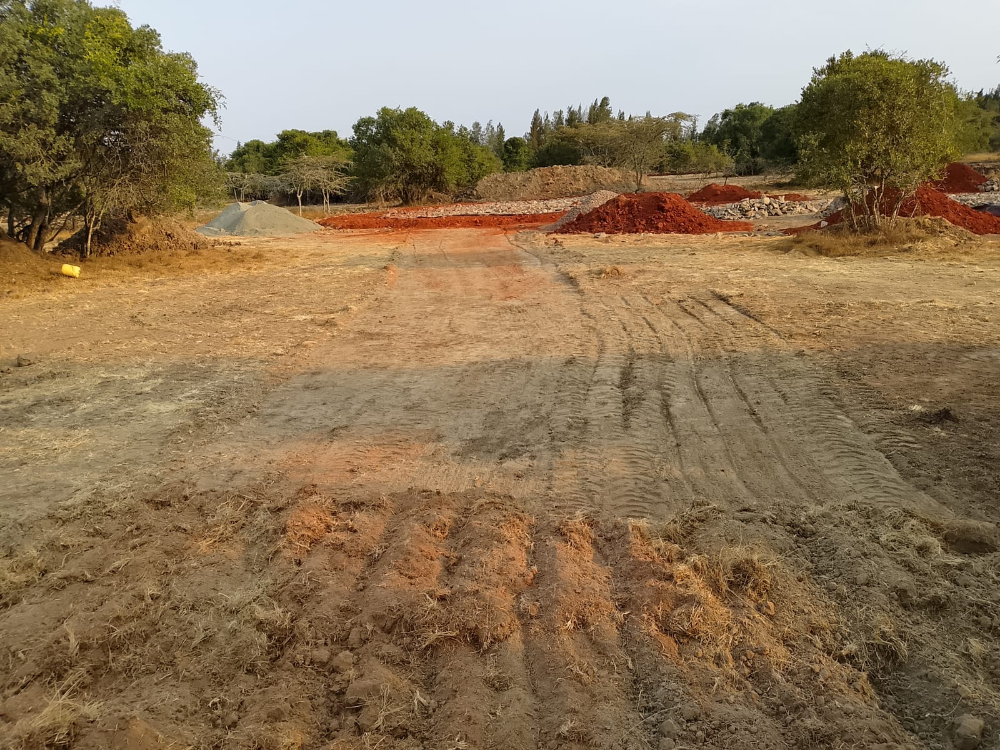
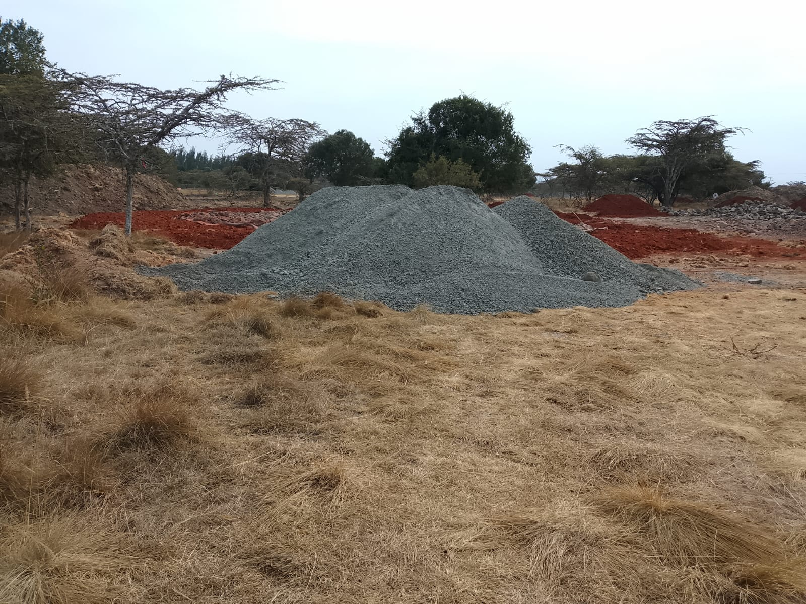
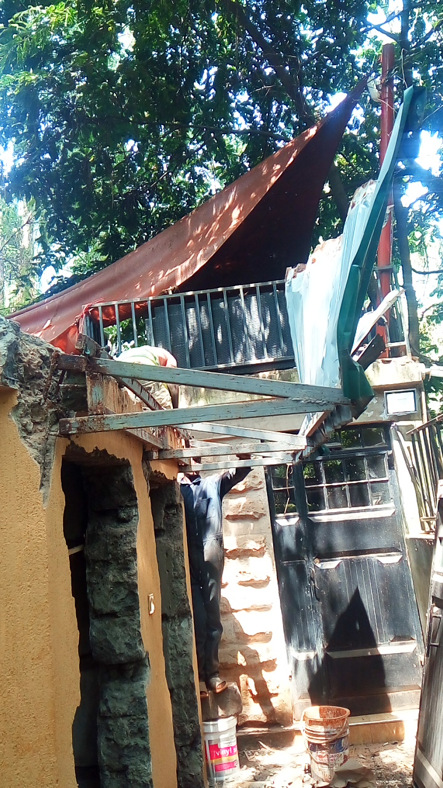
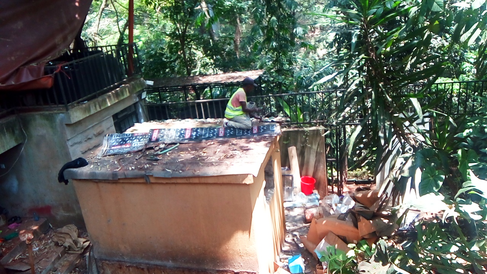
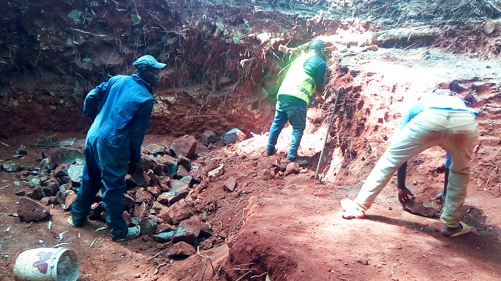

Mucheru World of Golf
Extensive course construction, earthmoving, fairway corridor clearance, subgrade containment, and specialized material deliveries progressed smoothly across Mucheru World of Golf under the joint field supervision of Mr. Gichuhi and Ken. Field operations achieved substantial progress in clearing seven distinct fairway playing corridors, securing separation polythene moisture barrier membranes across seven golf greens, advancing red soil backfilling for palm tree holes, and receiving vital pumice stone loads and green drainage pipe consignments.
- Clearing of Fairway Corridors (Fairways No. 3, 5, 6, 13, 14, 15 & 16): Heavy mechanical clearing, scrub removal, and subgrade blading progressed systematically across seven designated fairway playing corridors—specifically Fairways No. 3, No. 5, No. 6, No. 13, No. 14, No. 15, and No. 16. The Backhoe Loader bladed rough terrain, cleared vegetation, flattened mounds, and graded the corridor ground into clean, uniform fairway playing alignments.
- Separation Polythene Membrane Placement (Greens No. 10, 11, 12, 13, 14, 17 & 18): Separation polythene membrane was put in place across seven golf greens—specifically Green No. 10, No. 11, No. 12, No. 13, No. 14, No. 17, and No. 18. Field laborers unrolled and positioned continuous heavy-gauge black polythene membrane along the stone hardcore green foundations, effectively separating the porous hardcore sub-base from the outer red soil berms to prevent lateral soil migration and ensure moisture containment.
- Backfilling of Red Soil in Palm Tree Holes in Progress: Backfilling of rich red soil into excavated palm tree holes progressed actively along the perimeter fence line. Under the coordination of Kinoti, the farm tractor and hydraulic tipping trailer transported red topsoil to designated planting stations, where field crews backfilled the tree holes in full preparation for palm tree planting.
- Delivery of Two Loads of Pumice Stone Done: Delivery of two full loads of high-grade volcanic pumice stone was completed. The pumice aggregate was delivered to the course and staged in clean stockpiles near the green complexes, ready for installation into green drainage blankets and rootzone soil conditioning.
- Delivery of Green Drainage Pipes Done: Delivery of dedicated perforated PVC drainage pipes for the greens was successfully completed. The consignment was transported to the site via commercial flatbed truck, unloaded, and safely staged for trench installation across the green foundations.
Milestone Accomplishment — 7 Fairways Cleared, 7 Greens Membrane-Lined & Key Materials Delivered
Fairway clearing advanced across seven corridors (Fairways No. 3, 5, 6, 13, 14, 15, and 16); separation polythene membranes were put in place across seven greens (Greens No. 10, 11, 12, 13, 14, 17, and 18); red soil backfilling in palm tree holes is actively in progress; and two loads of pumice stone along with essential green drainage pipes were successfully delivered on-site.
Heavy earthmoving equipment on site operated continuously throughout the day. Per project operational rules, the Front Loader and Backhoe refer to the same physical machine on site (the Backhoe Loader); all operational hours and billing are consolidated under a single Backhoe Loader entry.
| Machine Model / Unit | Operator Hours | Unit Rate (KES) | Total Amount (KES) | Primary Field Tasks Assigned |
|---|---|---|---|---|
| Backhoe Loader (Consolidated Front Loader & Backhoe) |
8.50 hrs (8 hrs 30 mins) |
KES 6,500.00 | KES 55,250.00 | Clearing & blading fairway corridors No. 3, 5, 6, 13, 14, 15 & 16, red soil perimeter levelling, and site earthmoving. |
| Daily Total | 8.50 hrs | — | KES 55,250.00 | Consolidated Daily Machine Billing |
Heavy Equipment Operational Note
Total machine runtime of 8 hours 30 minutes (8.50 hours) was fully dedicated to earth blading along fairway corridors No. 3, 5, 6, 13, 14, 15 & 16 and finalizing red soil perimeter slopes around green complexes. The machine operated at maximum efficiency with zero mechanical downtime.
🎥 Mucheru World of Golf — Daily Operations & Progress Video
Comprehensive field video footage capturing September 4 operations at Mucheru World of Golf, including fairway corridor clearing and blading across Fairways No. 3, 5, 6, 13, 14, 15, and 16, separation polythene membrane placement across seven greens (Greens No. 10, 11, 12, 13, 14, 17, and 18), red soil backfilling in palm tree holes, and material staging for pumice stone and green drainage pipes.
Photographic visual documentation capturing fairway clearing across corridors No. 3, 5, 6, 13, 14, 15, and 16, machinery blading, separation polythene membrane placement across Greens No. 10, 11, 12, 13, 14, 17, and 18, red soil backfilling in palm tree holes, and material deliveries of pumice stone and green drainage pipes across Mucheru World of Golf.

Backhoe Loader Blading Fairway Corridors
The heavy front loader bucket blading scrub, leveling natural undulations, and clearing subgrade playing corridors across Fairways No. 3, 5, 6, 13, 14, 15, and 16.

Fairway Corridor Alignment & Grading
Rear perspective of the Backhoe Loader advancing along the cleared fairway corridor, clearing vegetation and shaping subgrade lines.

Cleared Fairway Corridor & Soil Profile
Graded fairway playing surface with machine operations in progress, removing rough vegetation and establishing clean fairway corridor alignments.

Panoramic View of Cleared Fairway Corridor
Open vista showing the broad, leveled fairway corridor connecting green complexes, bordered by indigenous acacia trees.

Laying Separation Polythene Membrane on Green
Laborer carefully unrolling heavy-duty black separation polythene membrane along the stone hardcore perimeter of the green foundation.

Positioning Separation Membrane Across Greens
Field team positioning separation moisture barrier sheets along the stone hardcore bedding rim across Greens No. 10, 11, 12, 13, 14, 17, and 18.

Separation Polythene Membrane in Position
Wide perspective showing the continuous black polythene sheet separating the hardcore stone bed from adjacent red soil embankments.

Completed Separation Membrane & Graded Soil Collar
Finished separation membrane installation with cleanly graded and compacted red topsoil berm enclosing the green perimeter.

Tractor Trailer Tipping Red Topsoil for Palm Trees
Tractor and hydraulic tipping trailer dumping rich red planting soil directly beside perimeter fence tree pits overseen by Kinoti.

Backfilling Red Soil in Palm Tree Holes
Ground inspection documenting active backfilling of rich red soil into excavated palm tree holes along the perimeter boundary fence.

Aerial Subgrade View — Perimeter Fence & Tree Pits
High-angle overhead view documenting the perimeter security fence line, tipped topsoil mounds, and prepared palm tree pits.

Delivery of Pumice Stone (Load 1 of 2)
First delivery load of volcanic pumice stone stockpiled cleanly near the green complexes for foundation drainage layers.

Pumice Stone Deliveries (Two Loads On-Site)
Dual stockpiles representing two complete delivered loads of pumice stone, staged and ready for green subgrade drainage installation.

Delivery of Green Drainage Pipes
Flatbed transport truck arriving on-site laden with heavy-duty PVC drainage pipes, delivered and staged for green foundation sub-surface drainage lines.
Chaka Farms
Following yesterday's safe delivery and inventory verification of the equipment consignment transported from Lower Kabete, Mr. Gichuhi and Dennis jointly supervised the systematic relocation and deployment of all items to their designated estate locations and secure container storage facilities across Chaka Farms. All items are logged using their verified consignment inventory tags.
| Tag # | Item Description | Specifications / Model | Qty | Final Deployment Location & Operational Status |
|---|---|---|---|---|
| INV-004 | Outdoor Gas Patio Heaters | Mushroom / Umbrella radiant patio heaters with cylindrical flame guards | 2 | Board Room Veranda: Fully assembled, set up on terrace, connected to gas, and operational. |
| INV-005 | LPG Gas Cylinders | 13 kg domestic cylinders (TotalEnergies Orange & K-Gas Green) | 2 | Board Room: Connected to the outdoor patio heaters for heating deployment. |
| INV-008 | Industrial Pedestal Fans | Heavy-duty oscillating cooling fans (1x High-velocity, 1x Medium orange) | 2 |
• 1x High-Velocity Commercial Fan: Main House Living Room. • 1x Medium Stand Fan (Orange Blades): Guest House. |
| INV-007 | Air Conditioning Units | Mixed cooling set (1x Von Hotpoint Portable AC, 1x Split Outdoor Unit) | 2 |
• 1x Von Hotpoint Portable AC: Guest House. • 1x Split Outdoor Condenser Unit: Stored in Storage Container. |
| INV-002 & 003 | Gas Cooktop / Hob & Frame | Ariston 4-Burner Built-in/Countertop Hob + Custom Cooker Frame Base | 1 set | Guest House: Relocated with base frame. (Note: All 6 burner components recorded missing). |
| INV-013 | Used Vehicle Tires | Scrap / spare radial car tires (tubeless) | 10 | Secure Storage Container: All 10 tires neatly restacked and stored. |
| INV-009 | Square Panel Exhaust Fans | Dual industrial square plate metal exhaust blowers with 4-blade impellers | 2 | Secure Storage Container: Safely staged inside container. |
| INV-012 | Utility Crate & Cabling | Blue heavy-duty vented plastic crate filled with power/data cables | 1 | Secure Storage Container: Placed in container electrical storage section. |
| INV-010 | Temporary Power Board | Timber batten distribution manifold with 13A switched UK socket gangs | 1 | Secure Storage Container: Stored in container electrical utility bay. |
| INV-001 | Centrifugal Water Pump | Model: CPm 158 (0.75 kW / 1.0 HP), Stainless steel impeller, Made in Italy | 1 | Secure Storage Container: Factory boxed pump unit secured in container. |
| INV-006 | AC / Equipment Metal Stands | Heavy-duty fabricated black square hollow steel stands (multi-tier & cage) | 2 | Secure Storage Container: Stored in container heavy hardware section. |
Consignment Deployment Status — 100% Items Allocated
All 28 verified inventory units from the Lower Kabete consignment were successfully transferred out of the staging carport and formally deployed to the Board Room, Guest House, Main House, or secured inside the storage container.
Daily dairy milking yield accounting was overseen by Kamandau. All milk volumes are recorded strictly in Litres (L). Per project standards, the dairy cow milking yield represents the Gross Milk Production, from which daily farm allocations (goat kid rations and staff disbursements) are deducted to establish the net remaining farm balance.
| Accounting Category | Morning Session | Evening Session | Total Volume | Accounting Notes & Flow |
|---|---|---|---|---|
| Dairy Cow Milk Yield (Gross Herd Production) |
4.00 L | 3.00 L | 7.00 L | Total gross yield harvested from herd |
| Goat Kids Ration (Young stock feeding) |
— | — | - 0.50 L | Deduction drawn out of gross yield |
| Maasai Allocation (Security staff ration) |
— | — | - 0.50 L | Deduction drawn out of gross yield |
| Net Farm Milk Balance | 4.00 L | 3.00 L | 6.00 L | Retained Farm Inventory |
Milk Production Accounting Clarification
Total Gross Production for Friday, September 4, stood at 7.00 Litres (4.00L morning + 3.00L evening). Total disbursements of 1.00 Litre (0.50L for goat kids + 0.50L for Maasai) were drawn directly from gross production, leaving a clean net balance of 6.00 Litres for farm use.
Comprehensive kennel sanitation, pack socialization, obedience training, and compound grounds maintenance progressed in parallel across Chaka Farms. Willy directed comprehensive training and exercise regimens for the estate canine pack, while Margaret and Monica maintained pristine compound standards.
- Kennel Cleaning & Sanitation: Willy completed a thorough morning scrub-down, disinfection, and waste clearance across all kennel stalls, runs, and sleeping quarters, ensuring optimal hygiene and parasite prevention.
- Kennel Manners & Threshold Patience: Conducted structured threshold patience drills at kennel gates, reinforcing impulse control before release, calm waiting postures, and orderly kennel exit etiquette.
- Pack Patience & Obedience Training: Executed group obedience sessions focusing on sit-stay discipline, sustained eye contact, loose-leash control, and responsiveness to vocal and whistle cues across all dogs.
- Walking, Exercising & Goat Socialization: Conducted an extended farm exercise and socialization walk with Mali, Coby, and Bell. The dogs accompanied Willy through the farm pastures while grazing alongside the goat flock, demonstrating calm socialization and zero prey-drive reactivity toward livestock.
- Afternoon Off-Leash Farm Walking (Zara & Logan): Zara and Logan completed an afternoon off-leash exercise walk across the expansive Chaka farm acreage, practicing distance recall, pack tracking, and active physical conditioning.
- Estate Compound Cleanliness & Grounds Maintenance: Margaret and Monica performed daily compound sweeping, garden litter collection, path clearance, and general homestead grounds maintenance, keeping the living areas and farm perimeter immaculately groomed.
🎥 Walking, Exercising & Goat Socialization (Session 1)
Field video recording capturing the morning pack exercise, physical conditioning, and controlled goat socialization routine conducted with Mali, Coby, and Bell under Willy's direct handling.
🎥 Walking, Exercising & Goat Socialization (Session 2)
Extended footage displaying canine agility, paddock pacing, and calm socialization alongside grazing farm goats across the Chaka paddocks.
🎥 Kennel Manners & Patience Conditioning
Field video demonstration of structured kennel exit patience, threshold manners, and handler impulse control during morning kennel management routines.
🎥 Pack Patience & Obedience Training
Structured pack obedience drill showing focused sit-stay positions, handler attentiveness, and collective impulse discipline under Willy's guidance.
Photographic documentation of asset consignment deployment, equipment assembly, and outdoor patio heater installation at Chaka Farms.

Connecting LPG Cylinder to Patio Heater
Staff technician installing and connecting the 13kg orange LPG gas cylinder inside the base of the radiant umbrella patio heater at the board room veranda.

Board Room Veranda Gas Heater Setup
Two technicians completing final assembly and burner connection of the tall outdoor radiant gas patio heater adjacent to the outdoor rustic board table.
Kabete Residence
Extensive demolition, architectural clearance, structural dismantling, and daily pet care progressed at Kabete Residence, with operations overseen and field updates shared by Njoki. Labor teams concentrated on clearing the sunken outdoor fireplace area down to ground level, dismounting structural fixtures from the outdoor toilet structure, and demolishing masonry walls.
- Dismounting Toilet Doors at Fireplace (In Progress): Skilled masons carefully chipped away surrounding concrete and mortar encasing the heavy exterior metal door frame of the fireplace toilet. Dismantling is progressing carefully to salvage and preserve the door unit for future reinstallation.
- Toilet Front Shade Canopy Dismounted (Completed): The corrugated metal canopy and supporting structural steel cantilever frame over the toilet entrance was systematically unbolted, cut free, and dismantled, clearing overhead obstructions.
- Ground-Level Demolition & Clearance at Fireplace (In Progress): A four-man excavation crew continued manual demolition, subsoil excavation, and boulder clearance across the sunken outdoor fireplace terrace, grading the rocky bank down toward native ground level.
- Demolition of Toilet Walls at Fireplace (In Progress): Heavy manual demolition commenced on the exterior masonry walls of the toilet facility. Workers broke through the concrete lintels, roof slab edges, and plastered blockwork, generating clean wall breaches.
- Resident Pets Welfare & Feeding: Domestic pet care was attentively maintained. Ajabu the Golden Retriever was taken for his daily exercise walk on leash along the paved driveway and fed his evening dinner on the shaded veranda. Resident cats (Reo, Mocha, and Aiko) were fed indoors in their stainless steel bowls.
Key Accomplishment Completed — Toilet Front Shade Canopy Dismantled
The overhead steel and corrugated front shade canopy at the fireplace toilet was completely dismantled and safely cleared from the entrance, enabling full masonry wall demolition to proceed.
Photographic visual documentation capturing toilet shade dismantling, door extraction, wall demolition, fireplace terrace excavation, and resident pet care at Kabete Residence.

Dismantling Toilet Front Shade Canopy
Laborer in high-visibility vest dismantling the corrugated metal roof and frame of the front entrance shade structure.

Cantilever Metal Canopy Frame Extraction
Workers detaching the welded steel shade framework from the toilet wall anchors to clear the entryway.

Chipping Masonry to Salvage Toilet Door
Mason carefully chiseling concrete around the heavy dark metal door frame to dismount and preserve the door undamaged.

Toilet Door Extracted from Opening
Exterior metal door and frame completely dismounted from the masonry wall opening with rubble gathered below.

Roof Slab Demolition & Waterproofing Removal
Worker atop the fireplace toilet roof slab peeling back waterproofing bituminous felt prior to slab concrete demolition.

Breaching Fireplace Toilet Masonry Wall
Demolition crew knocking through reinforced masonry blockwork, opening a large structural breach under the roof lintel.

Heavy Wall Demolition from Interior
Laborer inside the toilet structure using a heavy steel bar to break apart exterior stone blocks and concrete mortar.

Dismantling Upper Lintel & Front Wall Section
Worker positioned atop the wall chipping down concrete lintel courses while ground excavation continues in the background.

Fireplace Terrace Subgrade Excavation
Four laborers manually shoveling, digging, and clearing soil at the outdoor fireplace sunken pit down to ground level.

Deep Excavation & Boulder Clearing at Fireplace
Crew excavating rocky subgrade soil and removing loose boulders along the terrace bank at the sunken fireplace area.

Ajabu the Golden Retriever on Daily Walk
Ajabu enjoying his leashed afternoon exercise walk along the paved brick driveway at Kabete Residence.

Ajabu Feeding on Shaded Veranda
Ajabu eating his evening dinner in his bowl on the cool, shaded residence veranda tiles.

Resident Cats Reo, Mocha & Aiko Feeding Indoors
The three resident cats enjoying their evening meal side-by-side from stainless steel bowls indoors.
Amani Cottage
Comprehensive landscape maintenance, grounds grooming, turf irrigation, and chemical fertilization were carried out across the Amani Cottage grounds under the direct supervision of Edwin. Operations focused on optimizing soil moisture, maintaining pristine garden hygiene, and accelerating turf establishment on newly planted lawn grass.
- Calcium Ammonium Nitrate (CAN) Fertilizer Application: Edwin carefully applied CAN (Calcium Ammonium Nitrate) chemical fertilizer across all newly planted grass sections. The nitrogen and calcium nutrient application supplies immediate bioavailable nutrients to encourage vigorous root establishment, tillering, and dense green turf growth.
- Estate Grounds Irrigation: Conducted thorough irrigation across newly fertilized lawn zones and established garden beds, ensuring optimal dissolution of fertilizer granules into the root zone without scorching turf blades.
- Litter Collection & Pathway Sweeping: Thorough grounds sweeping was completed along the stone pathways, cottage veranda perimeter, driveway, and lawn borders, with all fallen leaves, twigs, and litter collected and cleanly disposed of.
Milestone Accomplishment — Turf Fertilization & Nutrition Cycle Completed
All newly planted lawn sections received a full treatment of CAN fertilizer followed by thorough irrigation, setting optimal conditions for vigorous turf growth and lush green coverage across the cottage frontage.